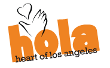

Heart of Los Angeles Youth, Inc.

Website:
http://www.heartofla.org/ Location:
Los Angeles, CA
HOLA’s youth attend overburdened inner city schools, live in communities that are heavily impacted by illegal drug trafficking and gang violence and many children are hindered by poverty and immigration status.
VISION
Hundreds of underserved children are traveling across one end of a beautiful green park with backpacks and musical instruments or athletics gear, through families perched under trees on blankets reading a book or painting in the middle of this community campus while others play sports, on their way to another green building met by inspirational teachers, coaches, parents and mentors, everyone is coming together and sharing, everyone is learning.
One of LA’s best kept secrets started in a church gym and almost 20 years later has grown into a vibrant community oasis for thousands of inner-city youth. HOLA is a thriving center that serves the Rampart community with programs in academics, the arts and athletics. The organization is unique in the quality of instruction and individual attention it provides to youth ages 6 to 19.
HOLA’s campus, located in and around Lafayette Park, is a home away from home for hundreds of kids. They know that they will get the help they need from HOLA’s professional staff and highly talented volunteers. Through HOLA’s extensive volunteer program, the youth are exposed to a wide array of experts including artists, executives, chefs, athletes, engineers, and counselors who truly commit themselves to providing programs of the highest quality, giving kids the best chance to become successful in life.
Through HOLA’s unique partnership with the LA City Recreation and Parks Department, students living in poverty have much needed green space – a state of the art field turf soccer field, outdoor basketball courts, and a brand new gym that is currently under construction.* Best of all, these facilities are safe spaces, open year round, truly offering the youth of the community an alternative to hanging out on the streets.
Supported Projects
Website and Program Building
Emily Yoshida
8/2005 — 8/2006
Our VISTA is building the infrastructure for “STUDENTS” to be able to develop meaningful skills that will serve them well later in life. Journalism, Digital Media and in the future, E-Commerce are areas that HOLA youth will now be able to excel in because our VISTA built out the technology and curriculum to one day master these skills. This will in turn allow our kids to realize HOLA’s mission of advancing their lives (Through technology) and revitalize their communities with the new skills and experiences they will have had because of technology.
Emily went on to set up our new HOLA website in HTML, which was awesome! She is very gifted artistically and her contribution to that project will be felt and seen for a long time to come.
The Wireless Lab, the system for check in and check out, plus the Web Journalism project using this lab have also been successfully initiated by Emily.
Our VISTA’s technological skills were an incredible asset to HOLA. Her willingness to share her knowledge was invaluable and we are already feeling her absence.
Marketing and Outreach
Ashley Cross
9/2004 — 9/2005
Install, maintain and troubleshoot a wireless network of 30 laptops, the Mobile Lab, by November 2004
Increase the number of youth served by the CLC from 500 to 600 (a 20% increase) by the end of the VISTA term, with the addition of the Mobile Lab Project. We may surpass this target number by recruiting Camino Nuevo High School youth, who can earn elective credits for participating in the MLP.
Create job descriptions and train 2-4 technologically advanced high school interns to teach younger CLC participants.
Public and private sector resources will enable the project to continue after the VISTA member leaves.
Create a manual of procedure on how to update the website after VISTA member leaves.
Recruit local college volunteers to work with high school youth on developing the HOLA Fun Zone (HOLA’s youth website).
HOLA’s AmeriCorps VISTA volunteer, Ashley Cross, has been an amazing addition to Heart of Los Angeles Youth (HOLA). You need only visit our new and improved website to see the many ways that she has made a tremendous impact upon the organization. At www.heartofla.org you will see updated stories and press releases which Ashley designed and published. She also designed and formatted a link for point of donation opportunities, as well as a merchandizing page featuring HOLA cards designed by our youth. HOLA has received close to $3,000 in donations through our website to date, which funds can be directly attributed to Ashley’s efforts. We also received a $50,000 grant that came through our new and improved site. Please take a look at the home page and the articles included on the site, which Ashley was responsible for designing and formatting. Ashley was able to recreate on our web site the entire article about HOLA, including photographs, which was published in “La Opinion”. She was responsible for creating the Special Events page and many of the stories and pictures throughout the site. At the same time, we have been able to hard copies of the PDF articles from the web site to form an integral part of HOLA’s press packet. Ashley’s contribution to the HOLA website is only one very critical part of how she’s expanded the capacity for our organization.
Ashley succeeded in refurbishing the 30 laptops ahead of schedule, but the organization encountered some unforeseen obstacles in procuring battery packs, a wireless router, wireless cards, and most importantly, a space to accommodate the Mobile Lab Project. Thanks to Ashley’s research, these were obtained during the last quarter of her term. While these challenges were being addressed, we added the new goal of increasing the capacity of HOLA’s development office through the overall improvement of the website, which Ashley undertook with great efficiency and success.
The Mobile Lab Project is now slated to be unveiled in March or April of 2006, a successful culmination of Ashley’s research and development efforts. Batteries, cards and a router have been obtained, and funds have been secured for the build-out of the new Teen Center.
Ashley’s ability to accomplish tasks quickly has greatly enhanced HOLA’s public image, giving a much-needed dynamic quality to the website, much to the organization’s benefit. Because she finished the Mobile Laptop Project in such a timely manner, HOLA was able to gain additional financial support from national companies towards launching a new Teen Center. Ashley successfully adapted to the new goals as they evolved during the year, and she was able to complete the tasks set out for her before the end of her contract. Fortunately for Heart of Los Angeles Youth, Ashley’s next post will be as a full-time staff member. She joined HOLA’s staff as the Bridges After School Manager and Volunteer Coordinator on September 19, 2005.
Related Content
None created yet!